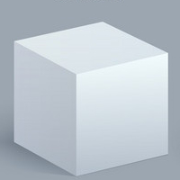
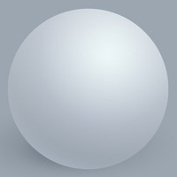
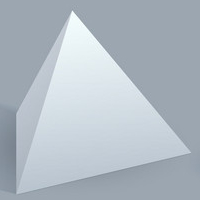
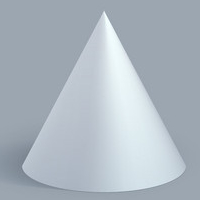
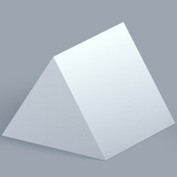
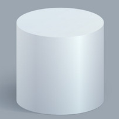

About 3D shapes:
3D shapes are solid shapes that exist in the three dimension. All 3D shapes have surface areas called faces, which are connected one to another at edges, and at end points, vertices. We see and interact with 3D shapes every day and you are watching this website on a 3D device. In contrast with 2D shapes, 3D shapes do not merely exist in one flat surface or plane.
Below is a list of some common 3D shapes.
| Name | Description | Picture |
|---|---|---|
| Cube | A cube is a 3D shape with six square faces, with three meeting at each of the eight vertices. The composition of a cube has 6 faces, 12, edges, and 8 vertices. |  |
| Sphere | A sphere is a 3D shape that is completely round. It is comparable to the 2D circle in that while a circle is considered to have infinite sides, a sphere is considered to have infinite faces.. |  |
| Pyramid | A pyramid is a 3D shape consisting of a 2D shaped base and a singular vertex at the top of the shape called the apex. Assuming that the base has n sides, a pyramid has n + 1 faces, n × 2 edges, and n + 1 vertices. For example, in a triangular pyramid with a triangular base, the 3D shape has 4 faces, 6 edges, and 4 vertices. |  |
| Cone | A cone is a pyramid that uses a circle as its base. As a result, cones are considered to have infinite faces, edges, and vertices. |  |
| Prism | A prism is a 3D shape consisting of two identical 2D shaped bases connected by parallelogram faces. Assuming that those bases have n sides each, a prism has n + 2 sides, n × 3 edges, and n × 2 vertices. For example, in a triangular prism with triangular faces, the 3D shape has 5 sides, 9 edges, and 6 vertices. A cube is also technically a prism. |  |
| Cylinder | A cylinder is essentially a prism that uses a circle as its two bases. Like with 3d shapes derived from circular bases, cylinders are considered to have infinite faces, edges, and vertices. |  |
There are many more 3D shapes out there in the real world, including 3D shapes based off modifying the properties of existing 3D shapes.